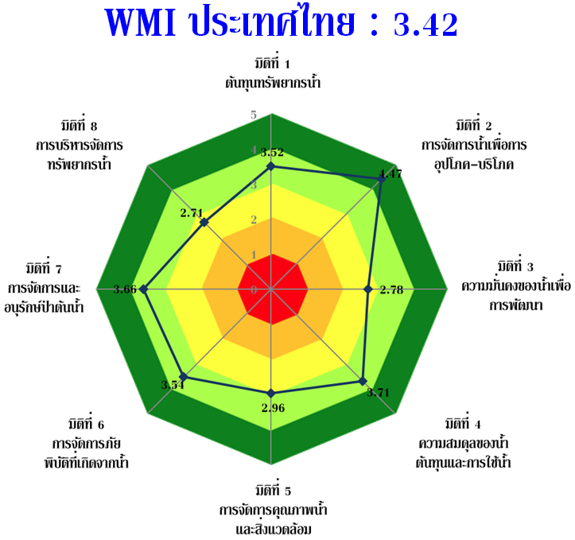

การคำนวณดัชนีชี้วัดการจัดการน้ำ (WMI)
ดัชนีชี้วัดการจัดการน้ำจะถูกประเมินภายใต้ของเขตของพื้นที่ตามความเหมาะสมของข้อมูล
ซึ่งสามารถประเมินในพื้นที่ตั้งแต่ระดับตำบล อำเภอ จังหวัด ลุ่มน้ำย่อย ลุ่มน้ำ ภาค และประเทศ
โดยในโครงการนี้จะทำการคำนวณดัชนีชี้วัดการจัดการน้ำระดับตำบล ซึ่งจะทำให้สามารถประเมินเพื่อหาค่าดัชนีชี้วัดระดับอำเภอ
จังหวัด ลุ่มน้ำย่อย ลุ่มน้ำ ภาค และประเทศ ได้จากการหาค่าเฉลี่ยรวมของพื้นที่ต่อไป การคำนวณดัชนีชี้วัดการจัดการน้ำ
ใช้สมการคำนวณตามน้ำหนักของดัชนีชี้วัดรายมิติทั้ง 8 มิติ ดังนี้

ระดับสถานะการจัดการน้ำของดัชนีชี้วัด
คำอธิบายสถานะการจัดการน้ำ
| ค่าดัชนีชี้วัด |
สถานะ |
คำอธิบายสถานะการจัดการน้ำ |
| >4-5 |
ต้นแบบ (Model) |
มีความยั่งยืนของหน่วยงานท้องถิ่นและบริการด้านน้ำ
แหล่งเงินทุนที่ยั่งยืนในการจัดหาเงินทุนของประชาชนในด้านการจัดการน้ำและสิ่งแวดล้อม
มีระดับการใช้น้ำสาธารณะที่ยั่งยืน และรัฐบาลนำเสนอรูปแบบใหม่ของการกำกับดูแลด้านน้ำ การสนับสนุนเทคโนโลยีขั้นสูง
การสนับสนุนการวิจัยและพัฒนา และการริเริ่มหรือการเป็นพันธมิตรระหว่างประเทศในการจัดการน้ำ |
| >3-4 |
มีประสิทธิภาพ (Effective) |
โครงการเพื่อสร้างความมั่นคงทางน้ำมีอยู่ในแผนแม่บทระดับชาติ เมือง ลุ่มน้ำและชนบท
และมีความสำคัญสูงในวาระการพัฒนาประเทศ มีการลงทุนภาครัฐในด้านน้ำในระดับที่เหมาะสม การควบคุมมีประสิทธิภาพ
และมีการสร้างความตระหนักรู้ของประชาชน |
| >2-3 |
มีศักยภาพ(Capable) |
การสร้างขีดความสามารถอย่างต่อเนื่อง การปรับปรุงอัตราการลงทุนภาครัฐ มีการบังคับใช้กฎระเบียบต่างๆ
และการบังคับใช้ที่มีประสิทธิภาพขึ้น วาระการพัฒนาประเทศที่จัดลำดับความสำคัญด้านน้ำและสิ่งแวดล้อม
และมุ่งเน้นการปรับปรุงขีดความสามารถด้านเทคนิคและทางการเงินในท้องถิ่น |
| >1-2 |
ต้องพัฒนา (Engaged) |
การออกกฎหมายและนโยบายที่สนับสนุนโดยโครงการเสริมสร้างสมรรถนะของรัฐบาล บุคลากร การปรับปรุงโครงสร้างเชิงสถาบัน
และเพิ่มระดับการลงทุนด้านน้ำของภาครัฐที่เพิ่มขึ้น (แม้ว่าอัตราดังกล่าวอาจยังไม่เพียงพอ) |
| 0-1 |
อันตราย (Hazardous) |
กฎหมายและนโยบายบางอย่างเกี่ยวกับน้ำและสิ่งแวดล้อมไม่เพียงพอ ระดับการลงทุนภาครัฐไม่เพียงพอ
กฎระเบียบและการบังคับใช้ที่ไม่เพียงพอ |
องค์ประกอบของดัชนีชี้วัดการจัดการน้ำ